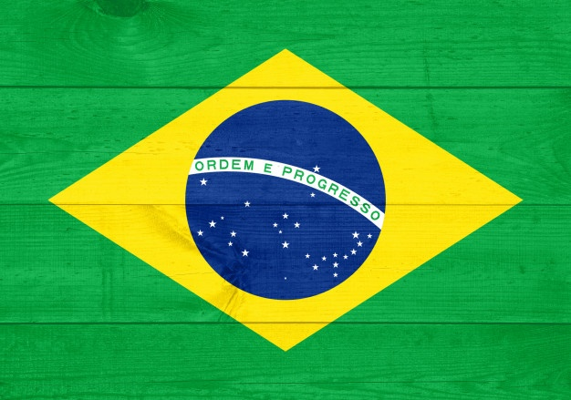

Servidor HTTP
TODO MUNDO TENTA, MAS SO O BRASIL E PENTA.
HISTORIA DO BRASIL EM COPAS DO MUNDO
E a selecao mais bem-sucedida da historia do futebol mundial, sendo a recordista em conquistas em Copas do Mundo, com cinco títulos invictos:
- 1958
- 1962
- 1970
- 1970
- 1994
- 2002
O BRASIL E unica selecao que venceu a Copa do Mundo em tres continentes distintos, na área de quatro confederações continentais de futebol (Europa, Américas, do Norte/CONCACAF e do Sul/CONMEBOL, e Ásia), e a ter jogado todas as edições do torneio, feito que ostenta desde 1950, sendo junto com a Seleção Japonesa as únicas que se classificaram para todas as edições posteriores à sua edição de estreia (japoneses se classificaram pela primeira vez em 1998, 15 edições depois da de 1930, disputando todas as seguintes.
Mais um motivo de orgulho para os torcedores brasileiros com nossa trajetória pelas Copas do Mundo da FIFA™: entre os 4 maiores artilheiros de todas as Copas, temos 2 brasileiros: o primeiro lugar é ocupado pelo fenômeno Ronaldo, com 15 gols em todas as edições que participou, e o insubstituível Rei Pelé, com 12 gols.
Desde o título do Pentacampeonato, em 2002, no Japão, até a edição de 2014, no Brasil, a seleção brasileira viveu mais momentos de baixos do que de altos. As performances nas Copas de 2006 e 2010 não atenderam às expectativas e, em 2014, ficou evidente a frustração geral da nação com a derrota por 7×1 para a Alemanha. A liderança do técnico Dunga foi amplamente criticada.
{kind=link}